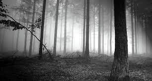
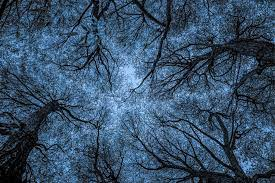
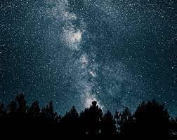
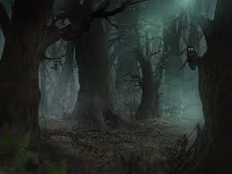
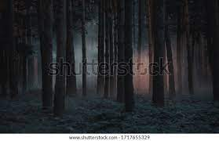

Introducción
La hipótesis del bosque oscuro, popularizada por Liu Cixin en "El problema de los tres cuerpos", plantea que las civilizaciones avanzadas podrían optar por ocultarse en el universo para evitar contactos potencialmente hostiles...
¿Qué es la Hipótesis del Bosque Oscuro?
La hipótesis del bosque oscuro postula que en un universo vasto y potencialmente peligroso, las civilizaciones avanzadas podrían optar por permanecer en silencio y ocultas para evitar ser detectadas por otras civilizaciones...

Orígenes y Desarrollo del Concepto
En su serie de novelas "El problema de los tres cuerpos", Liu Cixin introduce y desarrolla la hipótesis del bosque oscuro...
Aplicaciones en la Ciencia Ficción y la Ciencia Real
La hipótesis del bosque oscuro ha dejado una marca profunda en la ciencia ficción, influyendo en una variedad de obras literarias y cinematográficas...
Reflexiones y Debate
El debate en torno a la hipótesis del bosque oscuro ha generado críticas y análisis variados...
Conclusión
La página proporciona una introducción detallada a la hipótesis del bosque oscuro, comenzando con su origen en la serie de novelas "El problema de los tres cuerpos" de Liu Cixin...
Galeria de imagenes